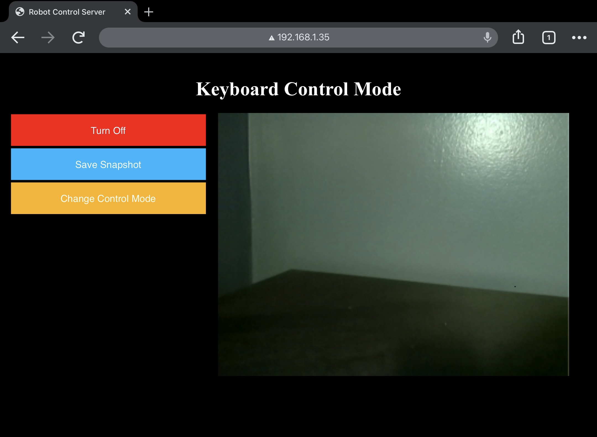
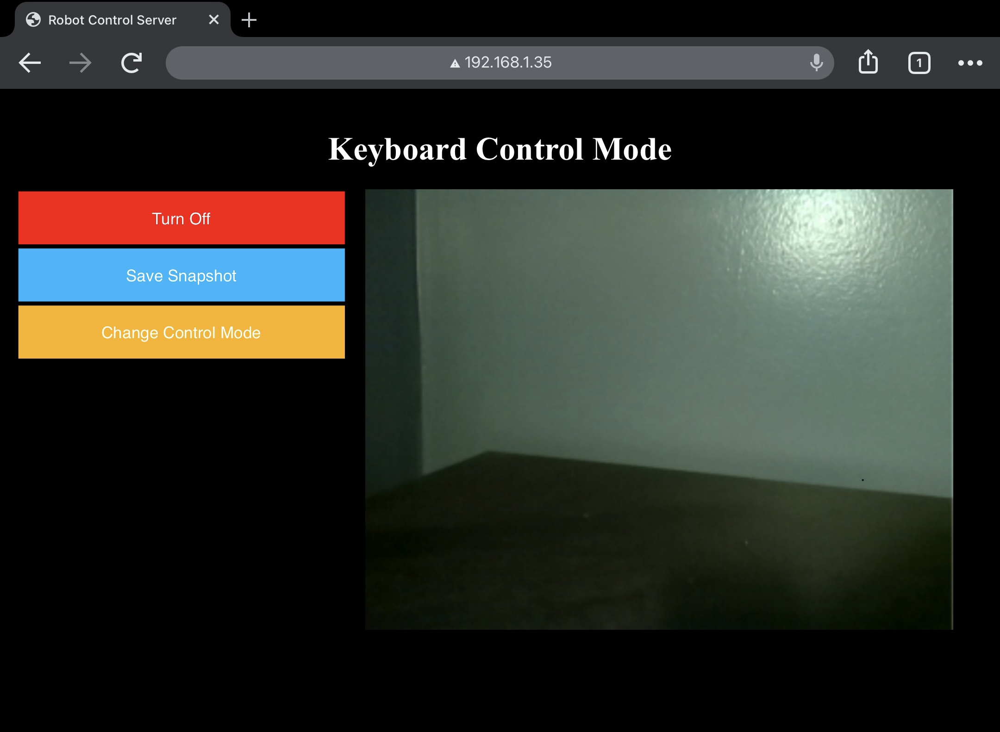

Project Overview
During COVID lockdowns, I built and programmed a small robot as a hobby project. It has 4 DC motors, one for each wheel. The Raspberry Pi on it controls the speed of the motors by sending PWM signals to the motor controllers. The Raspberry Pi hosts a web server which can be accessed over wifi to control the robot. The web server shows the robot's live camera feed and allows it be controlled using the arrow keys.
The robot can also perform autonomous line following. Using the camera on the robot and an OpenCV image processing pipeline, it can detect the location of a colored line on the ground ahead. It uses the location of the line to compute an error value. The error value feeds into a closed loop proportional controller which determines how quickly to turn. Special control logic was implemented for especially sharp turns, which allows the robot to stay on track even for 90 degree turns in the line. The robot also has the ability to look around and search for the line if it ever loses track of it.